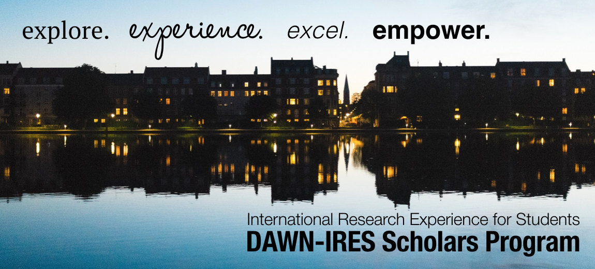

Meet the 2019 DAWN-IRES Scholars
Over the course of the summer, the DAWN-IRES Scholars Blog will feature interviews with each summer intern in the 2019 cohort. This is not only a great way to meet some budding astrophysicists, but also to learn a little bit more about the Cosmic Dawn Center and life in Copenhagen, Denmark. Check back each Friday this summer!
